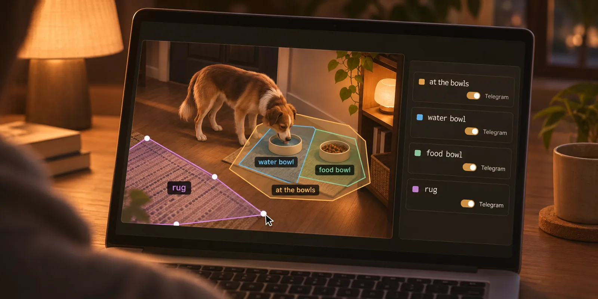
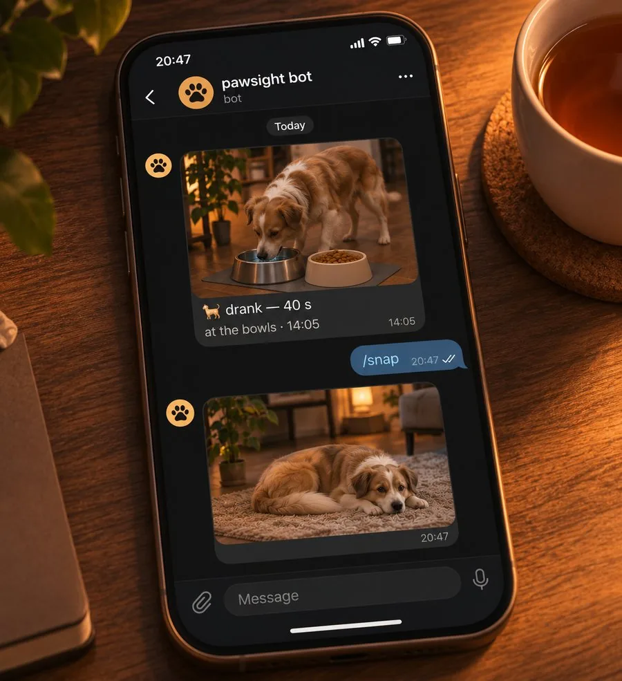
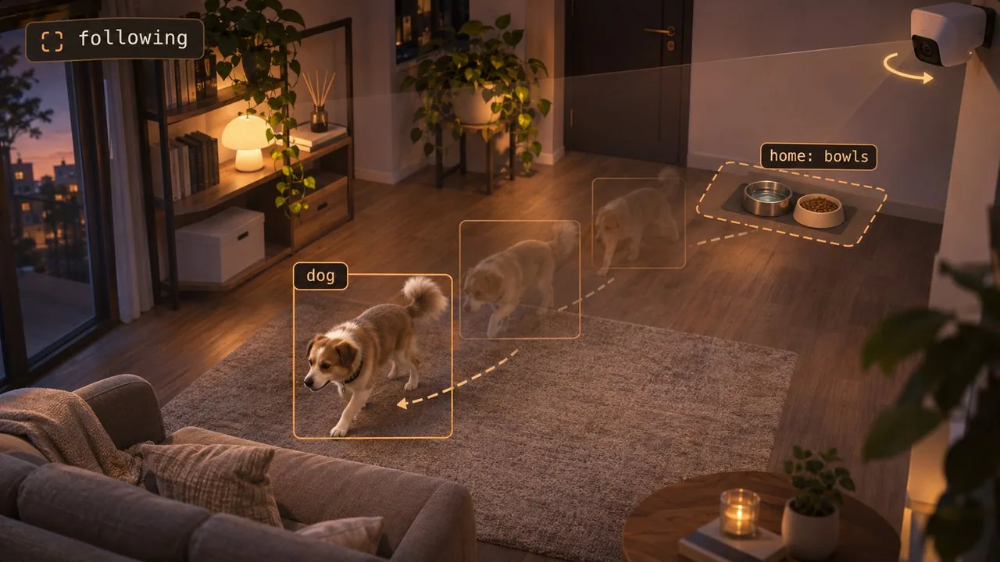
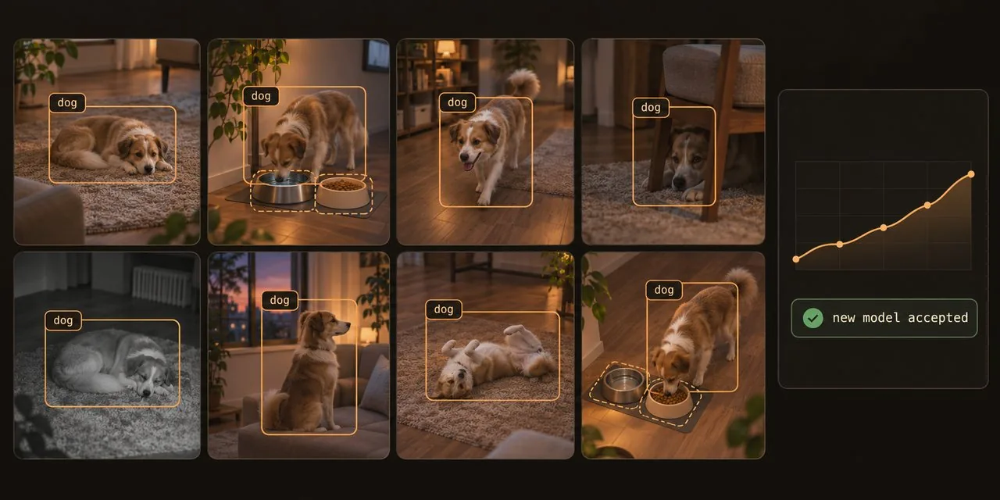
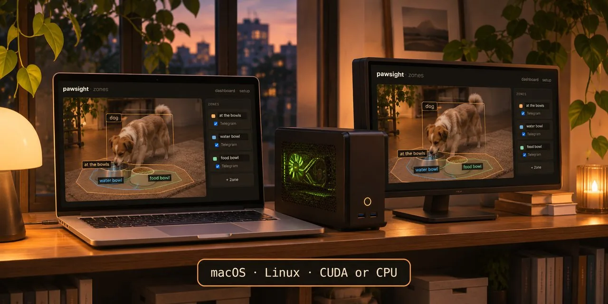

Zones you draw yourself
Mark the rug, the door, the kitchen in the browser. Zones are anchored to the bowls, so they follow a pan/tilt camera, and each one has its own Telegram switch.
pawsight watches an ordinary home camera, counts every visit to the water and food bowls, and tells you in Telegram. It runs on your own Mac or Linux box, offline.
A camera you own, a computer you own and a Telegram chat. No account, no subscription, no upload.

Mark the rug, the door, the kitchen in the browser. Zones are anchored to the bowls, so they follow a pan/tilt camera, and each one has its own Telegram switch.

“🐕 drank — 40 s” in your own chat, and a fresh frame on /snap.
Drinks and meals, counted.
Every bowl visit is timed. A local vision model tells drinking from eating. Visits and time, never made-up millilitres.
Pan/tilt Xiaomi cameras keep the dog in frame and return to the bowls. Any RTSP camera works, with presets for Tapo, Reolink, Hikvision, Dahua, EZVIZ and Imou.

Fine-tune the detector from the dashboard. An acceptance gate refuses a model that does worse than the one you have.

Metal on Apple Silicon, CUDA with an NVIDIA GPU, or just the CPU for one camera.
Video, frames and the database stay on your computer. Every service listens on loopback, and the Telegram bot polls out, so no port is ever opened to the internet.
Zones, a drink, a Telegram message and the camera following the dog, recorded on the real dashboard.
The installer sets up Python, the models and the camera bridge, then checks itself. If it stops halfway, run it again.
$ git clone https://github.com/Belidor/pawsight.git $ cd pawsight && ./install.sh $ ./start.sh # dashboard → http://127.0.0.1:8099
Step by step with screenshots: Getting started
pawsight is free and stays free. If it helps you look after your dog, a coffee keeps the evenings going. Next up: several cameras in one dashboard and drinking trends with an alert when something changes.